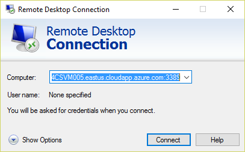
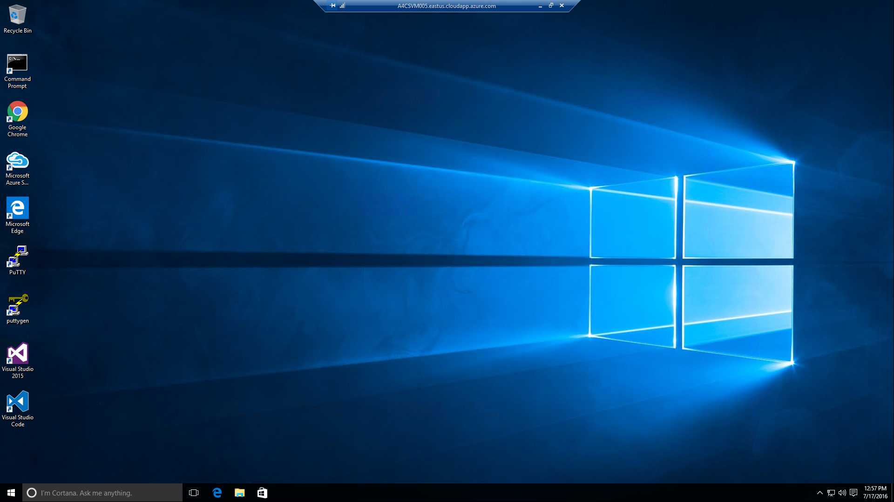

Getting Started with Azure
Overview
The entry point to Azure is the Azure Portal, which you will become familiar with as you work through the labs. Before you can use the portal, you need to activate an Azure subscription. The purpose of this lab is to get you set up with an Azure subscription. Before you do that, you will use a remote-desktop client to connect to a Windows 10 virtual machine (VM) that has been prepared for you and is already running in the cloud. Azure doesn't require Windows, and in fact you can access the Azure Portal and Azure services from any browser running on any operating system. But for the purposes of today's labs, you will use a Windows VM so you can run certain tools such as Visual Studio 2015 that are only available on Windows.
Objectives
In this hands-on lab, you will:
- Connect to the lab VM
- Activate your Azure Pass
- Log in to the Azure Portal with a Microsoft account
- View the Azure subscriptions associated with your account
Prerequisites
The following is required to complete this hands-on lab:
- An Azure Pass activation code. If you do not have one, please see the instructor.
- A Remote Desktop client that allows you to remote into a PC or VM running Windows. Windows comes with Remote Desktop Connection. Mac users can download the Microsoft Remote Desktop app for free from the Apple Store. Ubuntu users can use the open-source Remmina Remote Desktop Client or any tool that supports remote-desktop access from Linux.
Exercises
This hands-on lab includes the following exercises:
Estimated time to complete this lab: 30 minutes.
Exercise 1: Connect to the lab VM
In this exercise, you will remote into a Windows 10 virtual machine (VM) that has been prepared for you. The VM contains all the tools you need to work the labs in this course, including Visual Studio 2015, Visual Studio Code, Node.js, and many others.
Start the remote-desktop client installed on your laptop.
-
Connect to the VM whose address was provided to you by the instructor. When prompted for credentials, use the user name azureuser and the password Azure4cs! (including the exclamation mark).

Connecting to the lab VM
You will probably be warned that the publisher of the remote-desktop connection can't be verified. If so, ignore the warning.
-
The first time you connect to the VM, there will be a momentary delay as the Windows desktop is prepared for you. When it's ready, you will see the desktop with a list of shortcuts to Visual Studio 2015 and other tools on the left.

The Windows desktop in the VM
Now that you are connected to the lab VM, the next task is to activate an Azure subscription.
Exercise 2: Get a Microsoft account
When you log in to the Azure Portal, you do so using a Microsoft account. A given account can have multiple Azure subscriptions associated with it. When you consume Azure services through the portal — when, for example, you store data in a storage account or deploy a high-performance computing (HPC) cluster — those services are billed against one of the subscriptions associated with your account.
An Azure Pass is a free subscription that provides $500 worth of credits for up to 30 days. Currently, you can only use an Azure Pass with a given Microsoft account one time. If you already have a Microsoft account and are certain that it that has never been used with an Azure Pass, then you can skip this exercise and proceed to Exercise 3. If you don't have a Microsoft account, or if you do but aren't sure whether it has ever been used with an Azure Pass, follow the steps below to create a new Microsoft account.
In the VM, double-click one of the browser shortcuts on the desktop to start the browser of your choice — for example, Google Chrome or Microsoft Edge.
-
In the private browsing window, navigate to the Microsoft account sign-up page at https://signup.live.com.

Creating a new Microsoft account
-
Type in the information requested and at the bottom of the page, click the Create account button. Remember the user name and password you entered because you will need them to log in to the Azure Portal.
You can use any e-mail address you'd like as the user name for your new Microsoft account, but you can't use an e-mail address that has already been used to create a Microsoft account. If you need a new e-mail address, click Get a new email address under the User name box near the top of the form.
If you're prompted to provide further information or perform additional actions, follow the instructions on-screen to finish creating the Microsoft account.
Now that you have a Microsoft account, you can activate your Azure Pass.
Exercise 3: Activate your Azure Pass
In this exercise, you will use the Azure Pass code you were given to activate an Azure Pass subscription and associate it with your Microsoft account.
-
In your browser, navigate to https://www.microsoftazurepass.com. Select a country from the drop-down list labeled Please Select Country, and type the activation code you were given into the box underneath the drop-down list. Then click the Submit button.

Entering the activation code
-
If your activation code is accepted, you will be asked to sign in using your Microsoft account. Click the Sign in button.

Signing in
-
What happens next will vary depending on how many and what types of Microsoft accounts you have. The goal is to sign in using the credentials for the new Microsoft account you created in Exercise 2, or for your existing Microsoft account if you skipped Exercise 2. Ultimately, you will probably be asked to enter the user name and password for that account. Type them in and click the Sign in button.

Signing in with your Microsoft account
-
You will now be returned to the Azure Pass site and asked to verify your first and last names. Confirm that they are correct and click the Submit button.

Verifying your Microsoft account information
-
Click the Activate button to activate your Azure Pass.

Activating your Azure Pass
-
After a few moments, you will be asked to provide additional information, including a contact phone number. Enter your phone number and check the I agree to the subscription agreement, offer details, and privacy statement box. Then click the Sign up button and do not close the browser as it can take several minutes to activate the Azure Pass.

Completing the activation process
-
After several minutes, you'll be told "Your subscription is ready for you!" Do not click the Start managing my service button. Instead, close the browser window.

Your subscription is ready!
-
Open a new browser window and navigate to the Azure Portal at https://portal.azure.com. If you're asked to choose which Microsoft account to log in with, select the one that you used to activate your Azure Pass. If you're asked to enter a user name and password for that account, do so. Once you're logged in, the portal will appear in your browser.

The Azure Portal
Now let's confirm that your Azure Pass was activated and associated with your Microsoft account.
Exercise 4: Access the Azure Portal and view subscription information
In this exercise, you will learn how to view the subscriptions associated with your Microsoft account, and how to view usage data regarding those subscriptions.
-
Click Subscriptions in the ribbon on the left side of the page.

Viewing Azure subscriptions
-
Confirm that Azure Pass appears among the list of subscriptions associated with your account, and that the subscription status is Active. Then click Azure Pass.

Your Azure Pass subscription
Don't be concerned if there are several Azure accounts associated with your subscription. What's important is that Azure Pass is one of them.
-
A new blade — that is, a window within the browser window — opens in the portal showing usage data and billing information for your Azure Pass. Since you just activated the subscription, there will probably be no charges listed. However, you can check back here from time to time to keep track of the charges being billed to your subscription.

Usage data for your Azure Pass
You will learn more about the Azure Portal as you work through the day's labs. More importantly, you will get first-hand experience with some of the services that Azure offers and learn how to use them to build cloud-based applications that are scalable and robust.
Summary
In this hands-on lab, you learned how to:
- Log in to the Azure Portal with your Microsoft account
- View the Azure subscriptions associated with your account
- View billing information in the Azure Portal
The portal will be your home for everything Azure and your gateway for using the cloud.
Copyright 2016 Microsoft Corporation. All rights reserved. Except where otherwise noted, these materials are licensed under the terms of the MIT License. You may use them according to the license as is most appropriate for your project. The terms of this license can be found at https://opensource.org/licenses/MIT.